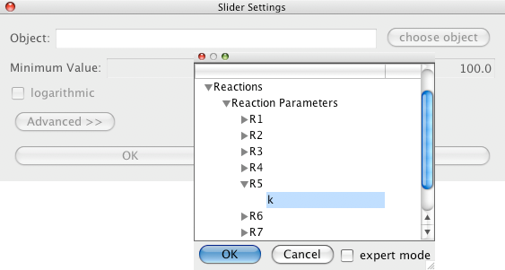
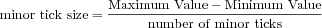
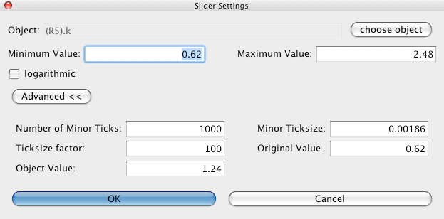
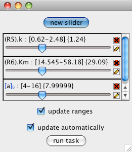
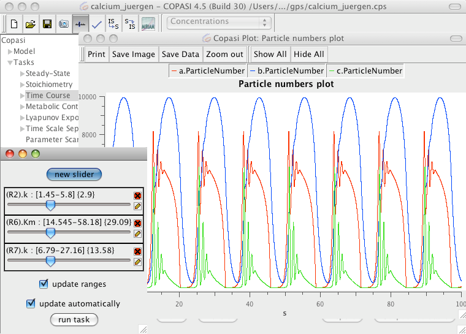

Sliders are user interface elements that let the user change model values without having to go to the corresponding dialog first. This way the user can change certain model values and immediately see the result this has on e.g. a time course simulation. The use of sliders is not limited to the Time Course task, but they can also be used for the Steady-State task and the Metabolic Control Analysis.
Per default the slider dialog is hidden, if you want it to be displayed, you have to activate it by toggling the corresponding menu entry in the Tools menu or through the slider button in the tool-bar. Depending on what element is selected in the object tree, the dialog will be disabled and a text will be displayed within the dialog that tells you so. If you select a task (or an element below the task) that supports sliders, the sliders dialog will be enabled.
Once the slider dialog has been activated, you can add new sliders with the new slider button at the top of the slider dialog. To edit the parameters of an already defined slider, just click on the edit button, which is located on the right side of the slider towards the bottom. If you no longer need a slider you have defined, you can close it by clicking on the remove button which is the top button on the right side of the slider. Alternatively you can add or modify the existing sliders via a context menu. The context menu can be activated with the right mouse button (CTRL + Mouse button for single button mice on Macs!). If you right click on an existing slider, the menu will offer the possibilities to remove this slider or to edit it. If you right click into the dialog window where there is no slider, you will be offered the possibility to define a new slider.
|  |
| Basic Slider Definition Dialog |
Once you are in the dialog for the definition of a new slider (see above), you have to choose an object to manipulate via the slider. This object can be selected from the selection dialog that pops up when you click on the choose object button. The selection tree is the same as the ones you get when
selecting objects for a report definition. The selection dialog also offers an expert mode in case the object you want to manipulate with the slider is not present in the simplified tree. Usually the objects that you want to modify in the time course simulation are one or several of the reaction parameters. This way you can interactively see how the behavior of your model changes when you change a specific parameter. In combination with plots this is a very powerful way to examine the behavior of your model.
After selecting an object, you can set the parameters for the slider. You specify the range the slider has to cover in the Minimum Value and Maximum Value fields. Additionally you can specify if the slider shall have a logarithmic or a linear scale. Per default sliders have a linear scale. Normally a slider will be available for all tasks that support sliders. An exception to this are slider for objects that are directly associated with a specific task, e.g. the number of steps in a time series, if you choose such an object for a slider, the slider will only be available for this task.
At the bottom of the dialog there is a button labeled Advanced. If you click on this button more options that influence the sliders behavior will show up (see above). Clicking the button a second time will hide these options again. The advanced options contain mostly fields that let you modify how many steps the slider has (see explanation below). The Object Value field determines the current value of the object that is associated with the slider. In the Number of Minor Ticks field you specify how many minor ticks your slider will have. And in the Tick size factor field you specify how many minor ticks make a major tick. Major ticks can be used to coarsely go through the range of the slider whereas minor ticks allow you to step through the range in a more fine grained fashion. Instead of specifying the number of minor ticks, you can specify the size of a minor tick. If you change either of those two values, the other one will be adjusted accordingly. The formula is: .
|  |
| Extended Slider Definition Dialog |
Once you have made all the settings, you confirm the slider definition with the OK button. A new slider will appear in the slider dialog.
|  |
| Slider Dialog with 3 Sliders |
Each slider shows the name of the object, the current value and the range in its label (see above). If the current value of the slider is outside of the defined range, a corresponding warning will be shown. The slider dialog has a check box called update automatically if this box is checked, COPASI will run the corresponding task each time you release a slider handle after moving it. If you don't want COPASI to automatically run the task each time you change a sliders value, you can uncheck this box and run the task manually by clicking on the run task button.
If the value of an object for which a slider has been defined changes when a task is run, the slider will automatically show the new value. If the check box called update ranges is checked, the sliders will automatically adjust their range if the value falls outside of the defined range. If the new value is larger than the old maximum value, the new maximum will be set to twice the new value. Likewise if the new value falls below the old minimum value, the new minimum will be set to half the current value.
Modifying a slider is essentially the same as defining a slider. The only difference being that you can not change the object the slider is connected to. In order to do that, you have to delete the slider and define a new slider for the new object.
Most people will probably use the sliders in combination with the mouse, dragging the sliders pointer to the desired new value. Since this way of using a slider is rather coarse, especially if the slider contains a large number of steps, you can also use the keyboard to change a sliders value. In order to do this, the slider you want to manipulate needs to have the keyboard focus. To give the keyboard focus, you have to hit the TAB key several times until the slider is surrounded by a small frame. Once the slider has this frame, you can increment and decrement the sliders value via the cursor and the page up/down keys on the keyboard. The cursor keys are used to change the value in small steps, the page up/down keys can be used to change the value in larger steps (see the explanation for major and minor keys above).
|  |
| COPASI with Plot Window and Sliders |